第 20 讲：颜色与感知——从光场到色彩空间
从全光函数到人类视觉，理解颜色如何被感知、匹配与表示，为渲染中的色彩管理打基础
◆ 学完这一讲，你应该能
学完能用自己的话解释全光函数（Plenoptic Function）及其降维到光场（Light Field）的过程
能说明光场相机的原理与优缺点，理解计算重对焦（computational refocusing）
能区分光谱功率分布（SPD）、人眼锥细胞响应与颜色感知的关系
能解释同色异谱（metamerism）及其对颜色复现的意义
能描述 CIE RGB 与 CIE XYZ 颜色匹配实验，理解颜色匹配函数
能读懂 CIE 色度图，说明色域（gamut）的含义
能列举 HSV、CIELAB 等颜色空间的特点与用途
核心结论速记
全光函数 P(θ,φ,λ,t,Vx,Vy,Vz) 描述了所有可能看到的视觉信息，是“视觉现实”的完整参数化。
忽略时间与波长、假设光线在真空中沿直线传播且无衰减，全光函数降为 4D 光场（2D 位置 + 2D 方向），可用双平面参数化 (s,t,u,v) 组织。
光场相机通过微透镜阵列同时记录位置与方向信息，实现先拍照后对焦，但牺牲空间分辨率且成本高。
颜色不是光的固有属性，而是人眼三种锥细胞（S、M、L）对光谱的响应结果，大脑只收到三个响应值。
同色异谱：不同光谱可以产生相同的 (S,M,L) 响应，因此可用三种基色复现绝大多数颜色，这是 RGB 显示的基础。
CIE RGB 颜色匹配实验得到颜色匹配函数，任意光谱的颜色可由积分得到三刺激值；但存在负值，故引入虚基色 CIE XYZ。
CIE XYZ 中 Y 表示亮度，x+y+z=1 定义色度，常用 (x,y) 色度图表示所有可见颜色；色域是基色能产生的颜色范围。
HSV 按艺术直觉组织颜色（色调、饱和度、明度），CIELAB 追求感知均匀，对立色理论（红-绿、蓝-黄、黑-白）有神经学依据。
011. 全光函数：把“能看到的一切”参数化
我们能看到的世界，本质上是一堆光线。全光函数（Plenoptic Function） 试图用一个函数描述“一个人在任何时间、任何位置、任何方向、任何波长上看到的光强”。它的完整形式是： \[ P(\theta, \phi, \lambda, t, V_x, V_y, V_z) \] 其中 \(\theta,\phi\) 是视线方向（球坐标），\(\lambda\) 是波长，\(t\) 是时间，\((V_x,V_y,V_z)\) 是观察者位置。这个函数包含了所有照片、所有电影、任何人看到过的一切——只要知道它，就能重建任意视角的图像。
课件从最简单的形式开始逐步加维度：
- 灰度快照：\(P(\theta,\phi)\)，固定视点、固定时间、对所有波长积分（平均）。
- 彩色快照：\(P(\theta,\phi,\lambda)\)，保留波长信息。
- 电影：\(P(\theta,\phi,\lambda,t)\)，加上时间。
- 全息电影：\(P(\theta,\phi,\lambda,t,V_x,V_y,V_z)\)，允许任意视点。
这个逐步加维的过程告诉我们：图像只是全光函数的一个切片。理解这一点，后面的光场、光场相机、乃至渲染中的“从相机发射光线”就都顺理成章了。
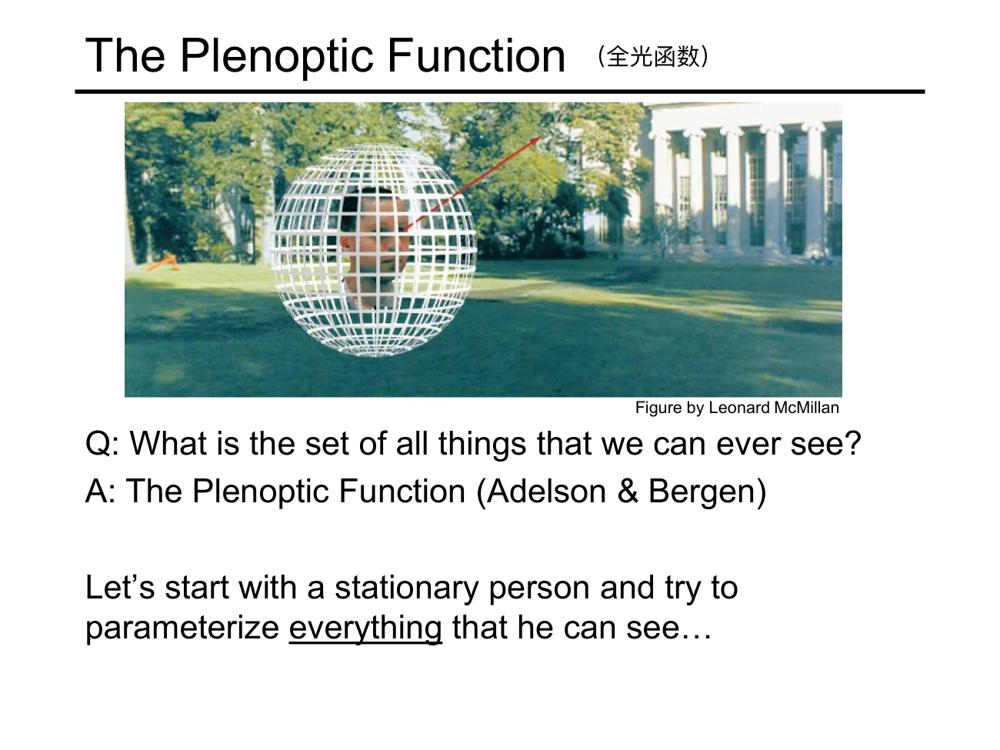
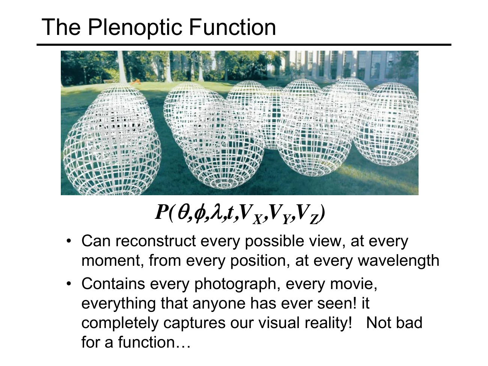
补充说明
全光函数是理论上的完整描述，实际存储和计算都需要降维与离散化。
常见坑
把全光函数当成“渲染方程” → 它描述的是可见光线的集合，不是光能传输的积分方程 → 区分“参数化视觉信息”与“计算光强”。
误以为全光函数必须记录所有波长 → 实际中常对波长积分或采样为 RGB 三通道。
UE / Unity 落地
UE/Unity 的相机渲染本质上是在采样全光函数的一个 2D 切片（固定视点、固定时间、三通道波长）。
光场概念对应 UE 的“全景捕捉（Panoramic Capture）”插件或 Unity 的立方体贴图（Cubemap）捕捉，但后者只记录方向，不记录位置。
022. 从全光函数到 4D 光场：光线复用与双平面参数化
完整全光函数维度太高，难以存储。课件做了两个关键简化：
- 忽略时间与波长：只考虑静态、单色光（或三通道分别处理）。
- 假设光线在真空中沿直线传播、无衰减、无散射：一条光线在空间中传播时，其辐射亮度（radiance）保持不变。
于是，一条光线可以由“3D 位置 + 2D 方向”描述，但沿光线方向移动位置不改变光强，所以位置只需 2D（例如在某个平面上），方向也只需 2D（球坐标），总共 4D。这就是光场（Light Field）。
为了组织这 4D 数据，课件介绍了双平面参数化（two-plane parameterization）：用两个平行平面，一个平面上的点 \((s,t)\) 表示光线穿过第一个平面的位置，另一个平面上的点 \((u,v)\) 表示光线穿过第二个平面的位置。一条光线由 \((s,t,u,v)\) 唯一确定。固定 \((s,t)\) 让 \((u,v)\) 变化，就得到一张从某个“小孔”看出去的图像；固定 \((u,v)\) 让 \((s,t)\) 变化，则得到从不同位置看同一场景的图像。这种组织方式让光场可以像图像阵列一样存储和渲染。
课件还提到，对于凸空间外的光场，可以只记录“表面”上的光线（plenoptic surface），因为内部光线可由表面光线推导。
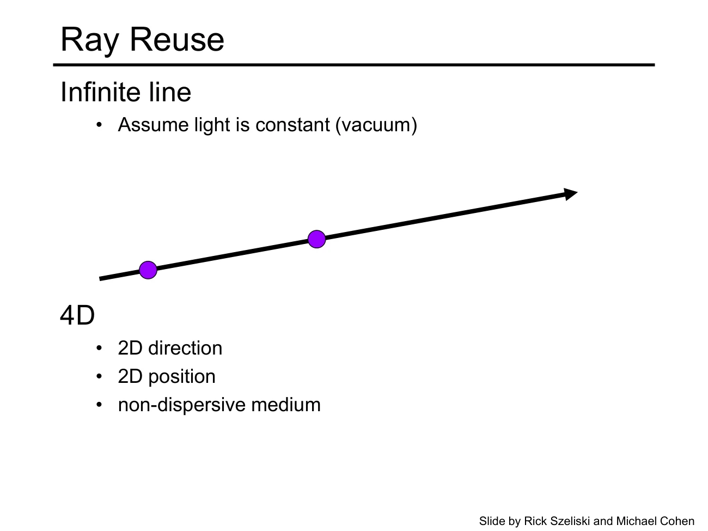
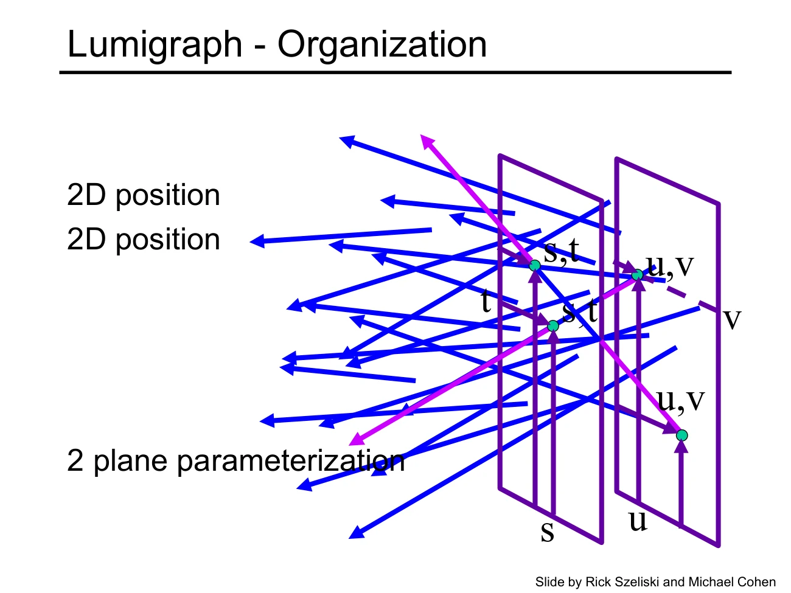
补充说明
光场是计算摄影学的重要概念，后续的 NeRF 等方法可视为对光场的隐式神经表示。
常见坑
把光场参数化中的 (s,t) 和 (u,v) 都当成方向 → 实际上一个是位置平面，一个是方向平面 → 记住“两个平面，各取 2D”。
认为光场可以记录任意场景 → 双平面参数化要求场景在两个平面之间或之外，且光线不被遮挡；遮挡和非真空介质会破坏假设。
UE / Unity 落地
UE 的 Lumen 使用表面缓存（Surface Cache）和光线追踪，概念上类似光场探针，但并非显式存储 4D 光场。
Unity 的 Light Probe Group 存储的是空间位置上的 irradiance，可视为光场的低维近似。
033. 光场相机：先拍照后对焦
传统相机每个像素记录的是辐照度（irradiance），即来自所有方向的光的积分。光场相机则用微透镜阵列（microlens array） 放在传感器前，每个微透镜对应一个“宏像素”，其下的多个传感器像素记录来自不同方向的光线。这样每个宏像素记录的是辐亮度（radiance） 的方向分布，即一小块光场。
课件以 Lytro 相机为例：它由 Ren Ng 教授创立，核心功能是计算重对焦（computational refocusing）——拍完照片后，可以虚拟地改变焦距和光圈大小。原理很简单：从光场中挑选特定方向的光线重新积分。例如，始终取每个宏像素最下方的像素，相当于从某个视点看；取中间的像素，相当于另一个视点；取不同方向的组合，就相当于改变对焦平面。
光场相机的优点是“光场包含一切”，所以可以事后调整。缺点也很明显：
- 空间分辨率不足：传感器像素同时用于空间和方向信息，二者折衷。
- 成本高：微透镜阵列设计精密，制造难。
- 课件总结：“计算机图形学就是关于权衡（trade-offs）”。
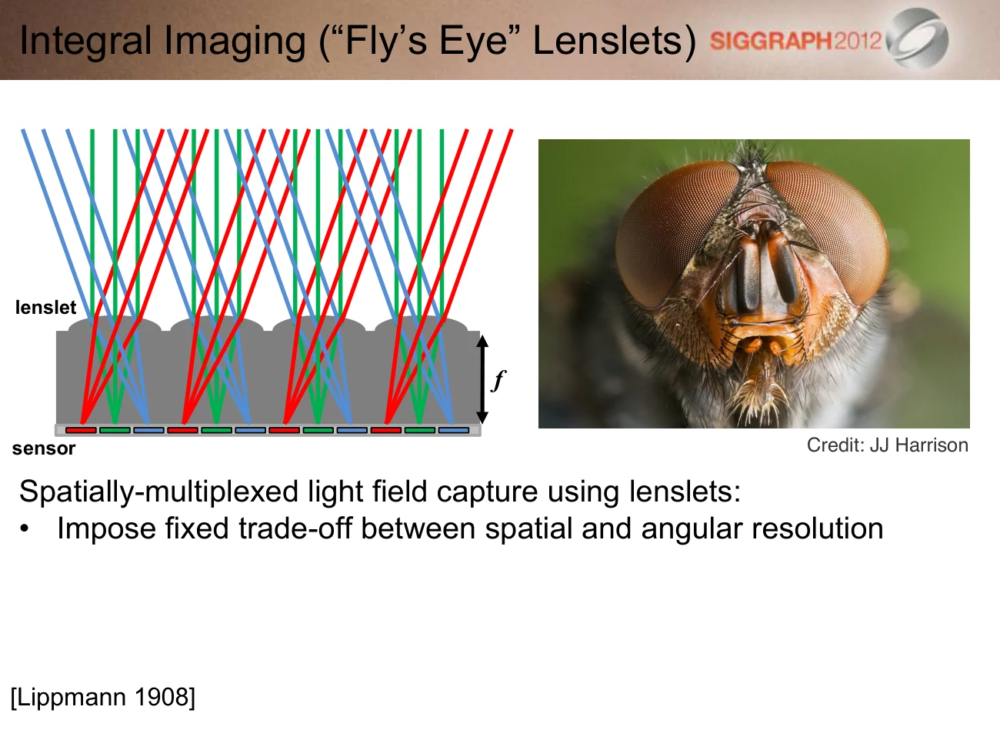
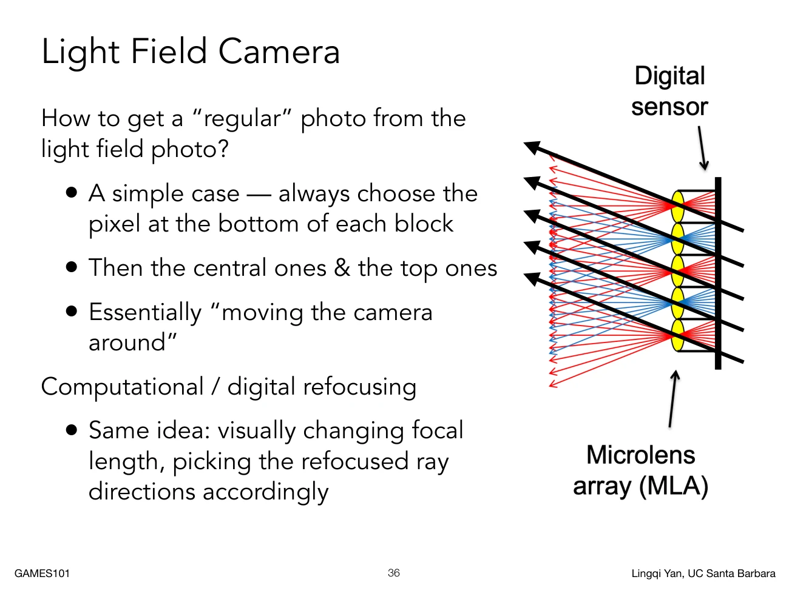
补充说明
Lytro 相机已停产，但光场技术影响了后续的多相机阵列和神经光场研究。
常见坑
认为光场相机可以无限重对焦 → 受限于微透镜的数值孔径和传感器分辨率，重对焦范围有限 → 查看相机规格中的角度分辨率。
混淆光场相机的“像素”与传统像素 → 光场相机的每个宏像素记录的是方向分布，不是单一颜色。
UE / Unity 落地
UE 的“虚拟制片（Virtual Production）”中，光场捕捉用于创建可重对焦的素材，但引擎内通常用序列帧或体积视频替代。
Unity 的 Depth of Field 后处理是软件模拟重对焦，并非真实光场。
044. 颜色的物理与生理基础：光谱、锥细胞与同色异谱
颜色不是光的固有属性，而是人的感知现象。课件强调：“不同波长的光不是‘颜色’”。要理解颜色，需要从物理和生理两个层面看。
物理层面：光是一种电磁波，可见光波长约 380–780 nm。描述光源的物理量是光谱功率分布（Spectral Power Distribution, SPD），即每个波长上的能量（单位如 W/nm）。不同光源（太阳、蓝天、荧光灯）的 SPD 不同。SPD 具有线性性：两个 SPD 相加，得到的光谱是各自之和。
生理层面：人眼视网膜上有两种感光细胞：
- 视杆细胞（rods）：约 1 亿个，负责暗光（暗视觉），只感知灰度，不感知颜色。
- 视锥细胞（cones）：约 600–700 万个，负责正常光照（明视觉），分为 S、M、L 三种，分别对短、中、长波长敏感。
人眼并不测量每个波长，而是将入射光谱分别与三种锥细胞的响应曲线 \(r_S(\lambda), r_M(\lambda), r_L(\lambda)\) 积分，得到三个响应值 (S, M, L)。大脑只收到这三个值。因此，不同的光谱可能产生相同的 (S,M,L) 响应，这就是同色异谱（metamerism）。同色异谱是颜色复现的基础：我们不需要复现完整光谱，只需用三种基色（如 RGB）混合，使 (S,M,L) 响应匹配即可。
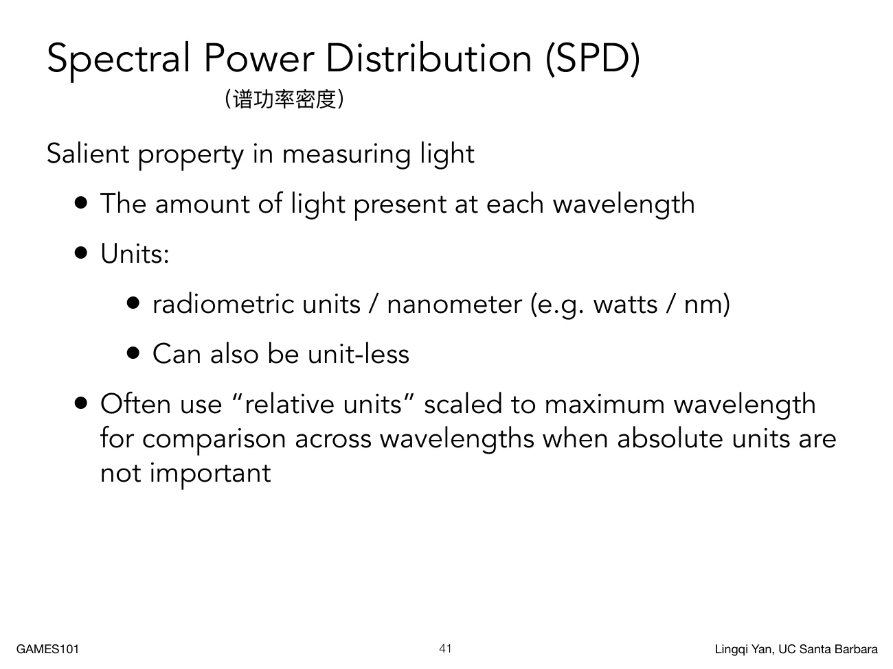
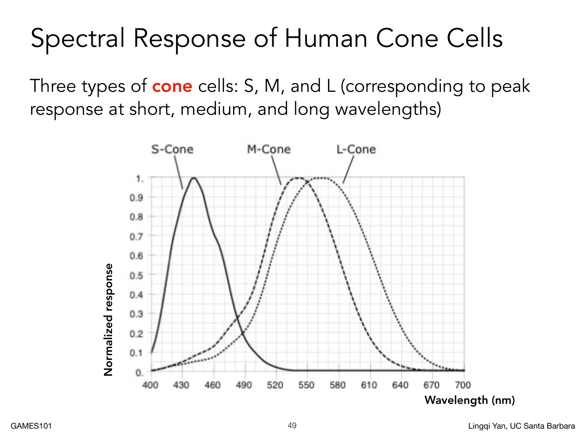
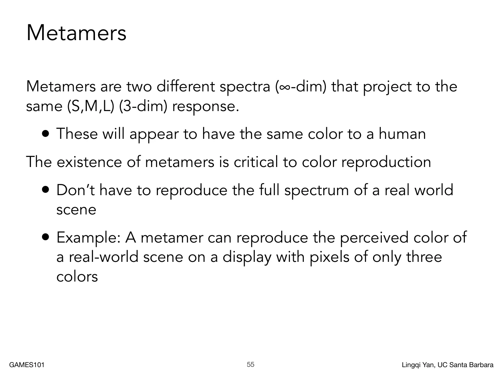
补充说明
同色异谱意味着显示器只需三种基色即可欺骗人眼，这是所有 RGB 显示设备的理论基础。
常见坑
把 SPD 当成颜色 → SPD 是物理量，颜色是感知结果 → 两个不同 SPD 可能看起来一样（同色异谱）。
认为人眼能分辨所有波长 → 人眼只有三种锥细胞，颜色感知是三维的，存在大量同色异谱。
混淆视杆细胞和视锥细胞的功能 → 暗光下颜色消失是因为视杆细胞不感知颜色。
UE / Unity 落地
UE 的材质中颜色通常以 sRGB 或线性 RGB 表示，引擎内部将 sRGB 转换为线性空间进行光照计算，以模拟物理光强。
Unity 的 Color Space 设置（Gamma / Linear）影响光照计算和最终显示，线性空间更符合物理。
055. 颜色匹配实验与 CIE RGB / XYZ 颜色空间
既然颜色感知是三维的，我们能否用三种基色光混合出任意颜色？加色颜色匹配实验回答了这个问题。实验装置：一边是待测单色光，另一边是三种基色光（如红、绿、蓝）的混合，观察者调节三种基色的强度直到两边看起来一样。
实验发现，对于某些波长，无论如何调节，都无法用三种基色匹配，除非把其中一种基色加到待测光一侧（即“负”强度）。这导致 CIE RGB 颜色匹配函数 \(\bar{r}(\lambda), \bar{g}(\lambda), \bar{b}(\lambda)\) 在某些波长处出现负值。注意：这些是匹配函数，不是锥细胞响应曲线，也不是基色的光谱。
对于任意光谱 \(s(\lambda)\)，其颜色可由积分得到三刺激值： \[ R = \int s(\lambda)\bar{r}(\lambda)d\lambda,\quad G = \int s(\lambda)\bar{g}(\lambda)d\lambda,\quad B = \int s(\lambda)\bar{b}(\lambda)d\lambda \]
为了消除负值并方便计算，CIE 定义了虚基色 XYZ，其匹配函数 \(\bar{x},\bar{y},\bar{z}\) 处处为正，且能覆盖所有可见颜色。XYZ 是“通用”颜色空间，Y 直接对应亮度（luminance）。
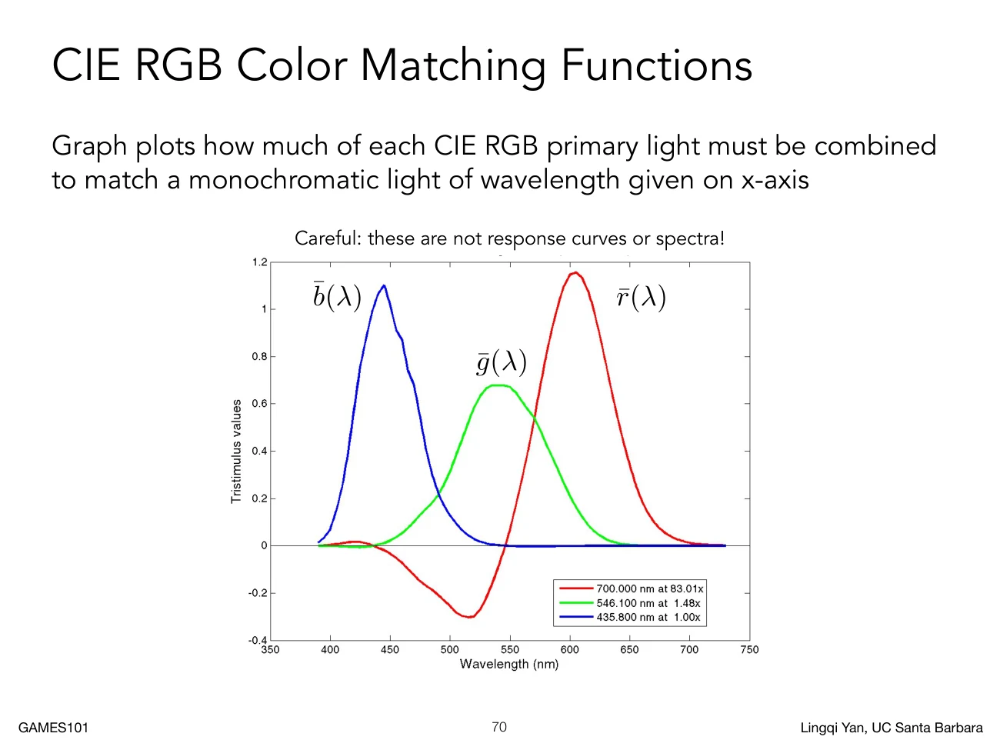
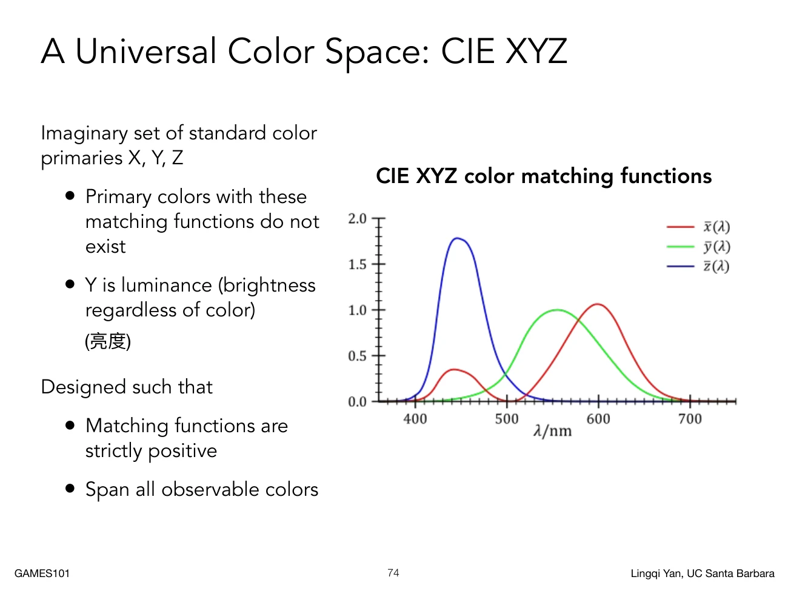
补充说明
颜色匹配实验是颜色科学的基石，CIE 1931 标准至今仍广泛使用。
常见坑
把颜色匹配函数当成锥细胞响应曲线 → 匹配函数是实验测得的，用于匹配颜色，不是生理响应。
认为 XYZ 基色是真实存在的颜色 → X、Y、Z 是虚基色，无法用物理光源实现，但数学上方便。
忘记积分中的波长范围 → 积分应在整个可见光谱上进行，实际计算常用离散采样。
UE / Unity 落地
UE 的线性颜色空间内部使用 XYZ 或类似的三刺激值进行颜色转换，但开发者通常只接触 RGB。
Unity 的 Color 类提供 RGB 和线性转换，但底层不直接暴露 XYZ。
066. 色度图与色域：颜色空间的边界
在 CIE XYZ 空间中，任意颜色由 (X,Y,Z) 表示。为了将亮度与颜色本身分开，定义色度（chromaticity）： \[ x = \frac{X}{X+Y+Z},\quad y = \frac{Y}{X+Y+Z},\quad z = \frac{Z}{X+Y+Z} \] 由于 \(x+y+z=1\)，只需记录 (x,y) 两个坐标，再加上亮度 Y，就能完整描述颜色。以 (x,y) 为坐标画出的图就是 CIE 色度图（CIE Chromaticity Diagram）。
色度图的边界是光谱轨迹（spectral locus），对应单色光（纯色）。内部点表示混合色，越靠近中心越不纯。中心点（约 x=1/3, y=1/3）是白色。
色域（gamut） 是一组基色能产生的所有颜色的集合。在色度图上，三种基色对应的点构成一个三角形，三角形内部就是该颜色空间的色域。不同颜色空间（sRGB、Adobe RGB、Rec.2020）的色域不同，覆盖的色度图区域也不同。sRGB 是互联网最常用的标准，但色域有限。
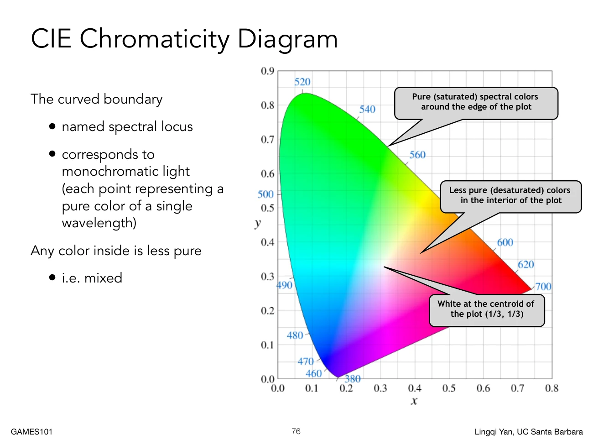
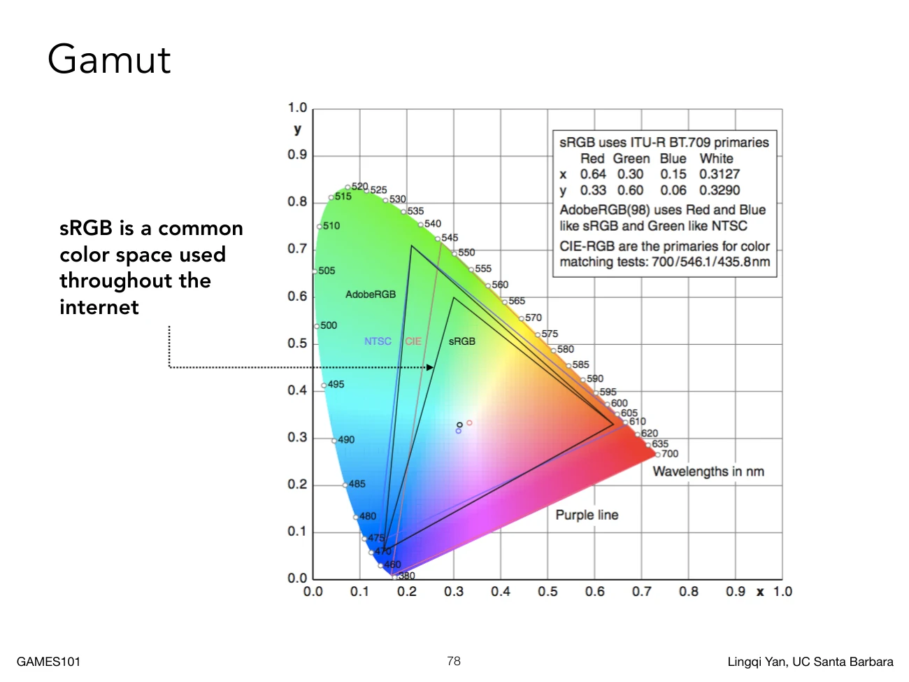
补充说明
色度图是二维投影，丢失了亮度信息，因此相同 (x,y) 不同 Y 的颜色在图上是一个点。
常见坑
把色度图上的距离当成感知差异 → 色度图不是感知均匀的，相同距离在不同区域感知差异不同。
认为色域越大越好 → 色域大可能带来更多色偏，且需要内容支持；sRGB 仍是安全选择。
混淆亮度 Y 和色度 y → Y 是绝对亮度，y 是色度坐标之一。
UE / Unity 落地
UE 的 Project Settings 中有“Color Gamut”选项，用于 HDR 显示输出，支持 Rec.2020 等宽色域。
Unity 的 Player Settings 中可设置 Color Space 和 HDR 输出，影响最终显示的色域。
077. 感知组织的颜色空间：HSV、CIELAB 与对立色理论
RGB 和 XYZ 是面向设备的颜色空间，而艺术家和设计师更习惯用色调（hue）、饱和度（saturation）、明度（value/lightness） 来描述颜色。HSV 颜色空间正是这样组织的：H 表示色调（颜色的种类），S 表示饱和度（颜色的鲜艳程度），V 表示明度（整体亮度）。它广泛用于颜色选择器。
然而 HSV 并不是感知均匀的。CIELAB（Lab*） 追求感知均匀：L 表示亮度，a 和 b 是对立色对——a 从绿到红，b 从蓝到黄。这与对立色理论（opponent color theory） 吻合：大脑似乎用三个轴编码颜色：白-黑、红-绿、黄-蓝。证据包括：我们无法想象“红绿色”，但可以有黄绿色、蓝绿色；以及后像（afterimage）* 现象——盯着红色看一段时间后看白墙会看到青色，因为红-绿通道被疲劳。
课件还强调“一切都是相对的”：颜色感知受周围环境影响（颜色恒常性、同时对比）。例如，同一个灰色在亮背景上显得暗，在暗背景上显得亮。
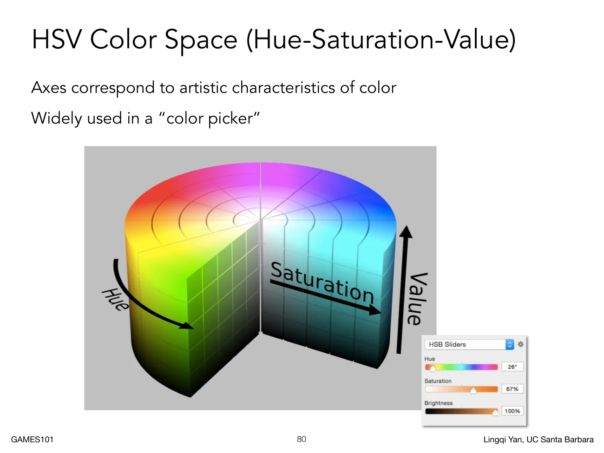
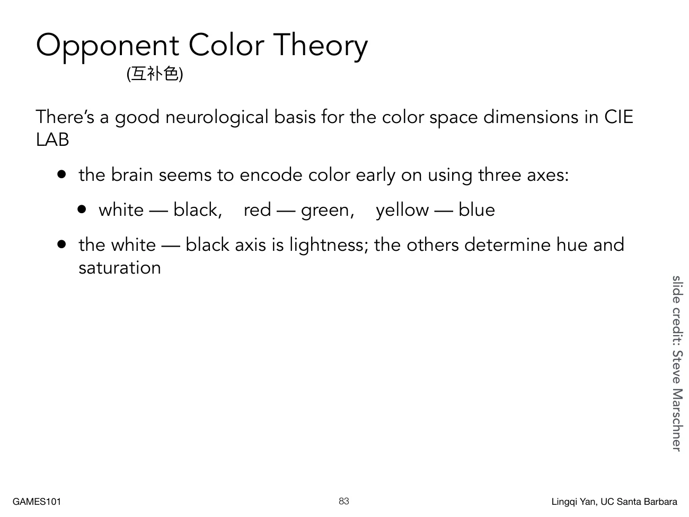
补充说明
CIELAB 的感知均匀性使其成为颜色差异计算（如 ΔE）的标准空间。
常见坑
认为 HSV 的 V 就是物理亮度 → V 是明度，与亮度相关但不等于 luminance，CIELAB 的 L* 更接近感知亮度。
在 HSV 中做颜色插值 → HSV 插值可能经过不自然的颜色，线性 RGB 或 CIELAB 插值更合适。
忽略颜色恒常性 → 同一材质在不同光照下看起来颜色不同，渲染中需考虑白平衡和色调映射。
UE / Unity 落地
UE 的材质编辑器中有 HSV 节点，可用于调整颜色，但光照计算仍在 RGB 空间。
Unity 的 Color 类提供 HSV 转换，但后处理中的颜色分级（Color Grading）通常使用 Lift/Gamma/Gain 或 ACES 等。
088. 减色空间 CMYK 与总结
前面讨论的都是加色（additive） 颜色空间：光越加越亮，如 RGB 显示器。印刷则使用减色（subtractive） 颜色空间：颜料吸收某些波长，反射其余波长，混合越多越暗。CMYK 使用青（Cyan）、品红（Magenta）、黄（Yellow）和黑（Key）四种墨水。
课件留下一个问题：如果 C、M、Y 混合可以得到黑色，为什么还需要 K？原因包括：
- 实际墨水不纯，CMY 混合得到的黑色偏棕，不够深。
- 三色叠印成本高且纸张易变形，用黑色墨水更经济。
- 黑色墨水在文字印刷中更清晰。
本讲从全光函数出发，经过光场、光场相机，进入颜色的物理与生理基础，再到颜色匹配、颜色空间与色域，最后以 CMYK 收尾。核心思想是：颜色是感知，不是物理；颜色复现依赖同色异谱；颜色空间是权衡。 这些知识是渲染中色彩管理、材质定义、光照计算的基础。
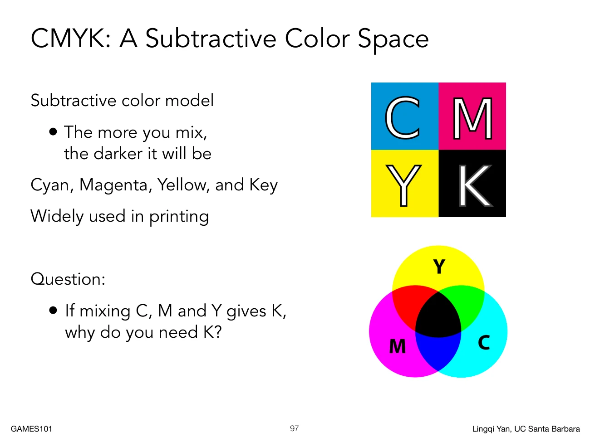
补充说明
加色与减色的区别是颜色科学的基本常识，理解它有助于避免在渲染中混淆发光与反射。
常见坑
在渲染中直接使用 CMYK 颜色 → 引擎通常使用 RGB，CMYK 主要用于印刷，转换需色彩配置文件。
认为 CMYK 的 K 是“黑色”的缩写 → K 代表 Key（关键版），通常指黑色印版。
UE / Unity 落地
UE/Unity 不直接支持 CMYK，但可通过纹理导入设置或后期处理模拟印刷效果。
游戏中的 UI 设计通常使用 sRGB，印刷品宣传材料才用 CMYK。
引擎对照表
| 概念 / 效果 | Unreal Engine | Unity |
|---|---|---|
颜色空间转换 | 材质中 sRGB 转线性，Project Settings 中可设置输出色域 | Player Settings 中 Color Space 可选 Gamma/Linear，纹理导入可设置 sRGB |
HDR 与宽色域 | 支持 HDR 输出和 Rec.2020 色域 | HDR 输出需在 Player Settings 中启用，支持 Rec.709/2020 |
颜色分级 | 后期处理体积中的 Color Grading，使用 ACES 等色调映射 | Post Processing Stack 中的 Color Grading，支持 ACES |
光场捕捉 | Panoramic Capture 插件可捕捉立方体贴图 | Cubemap 捕捉，或使用第三方光场插件 |
同色异谱应用 | 材质颜色用 RGB 三通道模拟光谱响应 | Shader 中用 RGB 颜色，依赖显示器三基色 |
术语双语表
| English | 中文 | 说明 |
|---|---|---|
| Plenoptic Function | 全光函数 | 描述所有可能可见光线的函数，包含位置、方向、波长、时间。 |
| Light Field | 光场 | 全光函数在静态、单色、真空假设下的 4D 降维，记录光线在空间中的分布。 |
| Microlens Array | 微透镜阵列 | 光场相机中用于同时记录空间和方向信息的透镜阵列。 |
| Spectral Power Distribution (SPD) | 光谱功率分布 | 描述光源在每个波长上的能量分布。 |
| Metamerism | 同色异谱 | 不同光谱产生相同 (S,M,L) 响应，看起来颜色相同。 |
| CIE XYZ | CIE XYZ 颜色空间 | 虚基色颜色空间，匹配函数处处为正，Y 表示亮度。 |
| Chromaticity | 色度 | 由 XYZ 归一化得到的 (x,y)，描述颜色而不含亮度。 |
| Gamut | 色域 | 一组基色能产生的所有颜色的集合，在色度图上是一个区域。 |
| HSV | HSV 颜色空间 | 用色调、饱和度、明度组织颜色，符合艺术直觉。 |
| CIELAB | CIELAB 颜色空间 | 追求感知均匀的颜色空间，L 亮度，a 红绿，b* 蓝黄。 |
课后练习
01 解释全光函数如何从 7D 降维到 4D 光场，并说明每一步假设。
查看答案
提示：
考虑时间、波长、光线传播特性。
全光函数 P(θ,φ,λ,t,Vx,Vy,Vz) 是 7D。降维步骤：1) 忽略时间 t（静态场景）；2) 忽略波长 λ（单色或分通道处理）；3) 假设光线在真空中沿直线传播且无衰减，因此沿光线方向移动位置不改变光强，位置只需 2D（如平面上的点），方向也只需 2D（球坐标），共 4D。
02 为什么 CIE RGB 颜色匹配函数会出现负值？CIE XYZ 如何解决这个问题？
查看答案
提示：
回顾颜色匹配实验中某些波长无法用三基色直接匹配的现象。
在颜色匹配实验中，某些波长的单色光无法用三种基色光直接混合匹配，必须将其中一种基色光加到待测光一侧（相当于负强度），因此匹配函数出现负值。CIE XYZ 通过定义虚基色（X,Y,Z），其匹配函数 \(\bar{x},\bar{y},\bar{z}\) 处处为正，且能覆盖所有可见颜色，从而消除了负值，方便计算。
03 给定一个光谱 s(λ)，如何计算它在 CIE XYZ 空间中的三刺激值？写出公式并说明各符号含义。
查看答案
提示：
使用颜色匹配函数进行积分。
三刺激值计算公式：\[ X = \int s(\lambda)\bar{x}(\lambda)d\lambda,\quad Y = \int s(\lambda)\bar{y}(\lambda)d\lambda,\quad Z = \int s(\lambda)\bar{z}(\lambda)d\lambda \] 其中 s(λ) 是光谱功率分布，\(\bar{x},\bar{y},\bar{z}\) 是 CIE XYZ 颜色匹配函数，积分在整个可见光谱范围进行。Y 直接对应亮度。
04 在 UE 或 Unity 中，为什么材质颜色通常要从 sRGB 转换到线性空间？如果不转换会怎样？
查看答案
提示：
考虑光照计算的物理正确性。
sRGB 是显示器的非线性编码，而光照计算（如漫反射、高光）需要在线性空间中进行，因为光强是线性叠加的。如果不转换，颜色值在计算时会被错误地加权，导致光照结果过亮或过暗、颜色偏移。UE 和 Unity 在线性颜色空间模式下会自动将 sRGB 纹理转换为线性，但自定义着色器需手动处理。
05 解释同色异谱现象，并说明它对彩色显示器设计的启示。
查看答案
提示：
从人眼锥细胞响应和颜色复现角度思考。
同色异谱是指不同光谱分布的光，在人眼中产生相同的 (S,M,L) 锥细胞响应，因而看起来颜色相同。这意味着我们不需要复现真实场景的完整光谱，只需用三种基色（如 RGB）混合，使 (S,M,L) 响应匹配目标颜色即可。因此，彩色显示器只需三种基色就能欺骗人眼，复现绝大多数颜色。